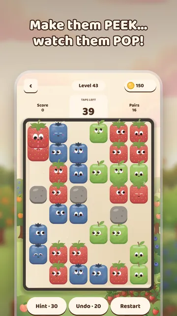
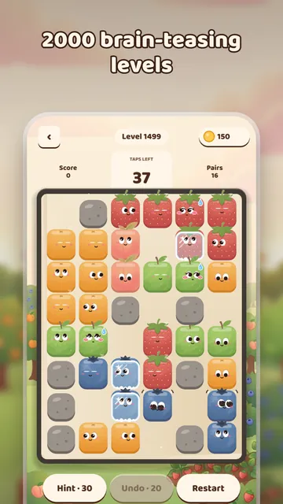
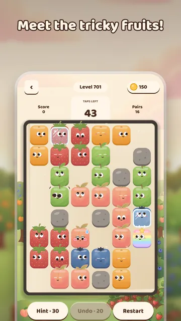
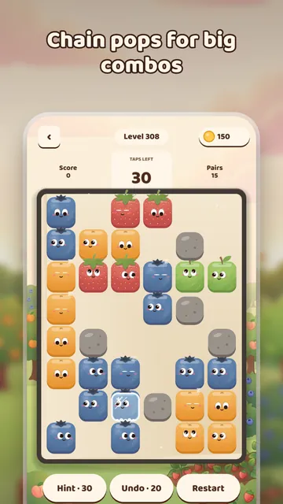
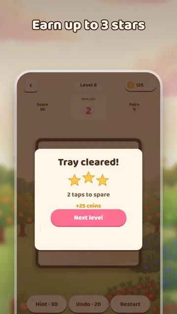

What is Peek-a-Pop?
Every fruit block has googly eyes. Tap a block to turn its gaze. When two matching fruits look right at each other, they pop, and the fruits behind them get a clear view of their own twin. Plan your taps and set off chain pops. It is a calm puzzle game you can play offline on a commute, with no timer and no lives, for adults and kids who like brain teasers.
Features
- Turn, match and pop with just one tap
- 2000 levels, each one checked to be solvable
- No timer and no lives: play at your own pace
- Chain reactions: one tap can set off a whole cascade of pops
- Earn up to 3 stars per level and replay any level to perfect it
- Tricky fruits: stones, sleepy, frozen, rainbow, dizzy and shy fruit
- Hints and undo when you are stuck
- Save progress with Google Play Games and continue on a new phone
Screenshots





Frequently asked questions
Can I play Peek-a-Pop offline?
Yes. You can play offline, anywhere.
Is there a timer or limited lives?
No. There is no timer and no lives, so you play at your own pace. Each level does limit your taps: clear the whole tray before they run out, and finish with taps to spare for 3 stars.
Does Peek-a-Pop have ads or in-app purchases?
Yes. It is free to play with ads and optional in-app purchases: remove ads and coin packs. There is also a daily gift of coins.
How do I play?
Tap a fruit to turn it clockwise. Make two matching fruits look at each other to pop them. Clear the whole tray before your taps run out.
Can I keep my progress on a new phone?
Yes. Save your progress with Google Play Games and continue on a new phone.
What if I get stuck?
Use a hint or undo. Every one of the 2000 levels is checked to be solvable.